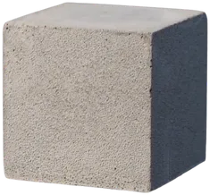

ABOUT NANOLITE
Lighter materials.
A broader vision.
Founded in 2010 by Muhammad Momen, Nanolite brings Cellular Lightweight Concrete materials, manufacturing systems and technical support together.

Built on lightweight concrete.
Our construction portfolio includes CLC blocks, panels, insulated roof tiles, ready mix and foaming agent. We work with clients to coordinate dimensions, density and production requirements for each project.
Explore our productsFrom material to manufacture.
Portable equipment and installed plants support businesses planning their own CLC production. Our team helps coordinate equipment, utilities, site readiness and application guidance.
A group with a shared purpose.
Nanolite Group’s supplied profile describes its work across construction, textiles, technology, mining and agriculture, with entities in the United States, UAE and Pakistan.
Read the corporate profileOur leadership.
Muhammad Momen · Founder
Malik Mehmood · Chairman
Talk to our team